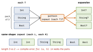

swift · folio
In one line: A parameter pack (5.9) lets one generic declaration take
any number of type parameters: <each T> declares the pack,
repeat pattern expands the pattern once per element, and
each x names the current element — no more 1…10 overloads. Around it, every
release since added small syntax that deletes boilerplate: expression
if/switch, trailing commas, raw identifiers, weak let,
module selectors, some P?, @diagnose, await in defer.
Download PDF Print view LaTeX source

How packs work
func f<each T>(_ v: repeat each T):Tis a type pack,va value pack; a callf(1, "a", true)bindsT = {Int, String, Bool}. Constraints apply per element:<each T: Equatable>.repeat Pis a pack expansion:Pmust mention a pack witheach; it becomes a comma list —repeat [each T]→[Int], [String], [Bool]. Values:(repeat each v)builds a tuple (SE-0399).- Same shape: two packs in one expansion (
repeat (each L, each R)) must have the same length — the compiler infers and enforces it. - No
count, no subscript: you cannot index a pack. You expand it, or (6.0, SE-0408) iterate it:for x in repeat each v, one element per iteration, lazily —breakstops evaluating the rest. In 5.9: a local generic func +repeat try f(each v). - Variadic types (SE-0398, 5.9):
struct Zip<each S: Sequence>; at most one pack per type; store it as a tuple(repeat each S). - Where you meet them: SwiftUI’s
ViewBuilder(no 10-child limit),zip-style APIs over any arity, typed tuple helpers.
One pattern, stamped per element

Example — packs
func tuplify<each T>(_ v: repeat each T) -> (repeat each T) {
(repeat each v) // 5.9: tuple expansion
}
let t = tuplify(1, "a", true) // (Int, String, Bool)
func allEqual<each E: Equatable>(_ l: (repeat each E),
_ r: (repeat each E)) -> Bool {
for (a, b) in repeat (each l, each r) { // 6.0 pack iteration
guard a == b else { return false } // rest never evaluated
}
return true
}
allEqual((1, "a"), (1, "b")) // false; E = Int, String
struct Zip<each S: Sequence> { let seqs: (repeat each S) }Example — the new syntax
let tint: Color = if ok { .green } else { .red } // 5.9
let p = Point(x: 1, y: 2,) // 6.1
@Test func `rejects an empty email`() {} // 6.2
enum Shade { case `50`, `100` }; let s = Shade.`50` // 6.2
final class Tag: Sendable { weak let owner: Owner? } // 6.3
let x = ModuleA::getValue() // 6.3
weak var delegate: any CellDelegate? // 6.4
@diagnose(DeprecatedDeclaration, as: warning,
reason: "legacy bridge until 3.0") // 6.4
func bridge() { oldAPI() }
func upload() async throws {
let h = try await open()
defer { await withTaskCancellationShield { await h.close() } }
try await h.send(payload) // 6.4
} (Owner: a Sendable class;
CellDelegate: AnyObject-bound.)
| Feature | Swift | SE | The rule that bites |
|---|---|---|---|
if/switch expression | 5.9 | 0380 | only as return value, assignment, let/var init — not inside a larger expression; else mandatory; one expression per branch; branches type-checked independently (if c { 0 } else { 1.0 } fails — annotate the type); a throw/fatalError branch is fine |
| trailing commas | 6.1 | 0439 | in ( ), [ ], < > lists: args, params, tuples, subscripts, capture lists, generics, interpolation. Not in if/guard conditions, inheritance clauses, where, case a, b |
| raw identifiers | 6.2 | 0451 | any characters between backticks except backtick, backslash, newline; not all whitespace, not only operator characters; use sites need the backticks too |
weak let | 6.3 | 0481 | still becomes nil when the object dies, but cannot be reassigned ⇒ a final class with it can be Sendable |
module selectors M::x | 6.3 | 0491 | pick the module when two imports export the same name (also on members: s.Foundation::data(using:)); lookup starts at module top level, so locals/generic params are unreachable; never on a new declaration’s name |
some P? / any P? | 6.4 | 0521 | = (some P)? / (any P)? — the optional wraps the opaque/existential, no parentheses needed |
@diagnose | 6.4 | 0522 | @diagnose(Group, as: error|warning|ignored, reason: "…") on one declaration (func, type, extension, import…); order-sensitive; module flag -suppress-warnings still wins |
await in defer | 6.4 | 0493 | only in an async context; awaited on every scope exit (a hidden suspension point); cancellation is not suppressed — wrap in withTaskCancellationShield (SE-0504) |
| access-level imports | 6.0 | 0409 | internal import X keeps X out of your public API (error if a public signature uses it); a bare import stays public in modes 5 and 6 unless InternalImportsByDefault |
package access | 5.9 | 0386 | visible to other modules built with the same -package-name (SwiftPM sets it); between public and internal; no subclassing outside the module |
Traps
- “Just use
v.count” — a pack has no count or index; iterate (6.0) or expand. some P?is an optional of an opaque type, not an opaque optional: the underlying type is still fixed.defer { await … }in a cancelled task:Task.sleep, network calls inside it fail at once — shield the cleanup.weak letis 6.3, not 6.2 (proposal header).
Remember
“each names it, repeat stamps it, for walks it.”